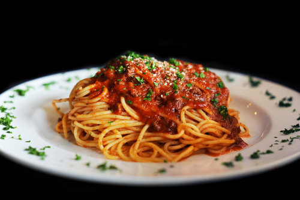

The Hot Meat Sauce

Description
Is there anything better than a beautifully made plate of spaghetti and meat sauce? The answer to that question is yes! In order to improve upon this age old classic Jen and I decided to do what we always do and make it spicy. Smokey anaheim peppers, tangy jalapenos and a generous portion of red pepper flakes were added to our everyday sauce to create what we lovingly like to call "The Hot Meat Sauce". If you like your food to have a kick than look no further! As always, enjoying with friends and a nice glass of wine makes any dish better!
Ingredients
- 1 lb ground beef
- 1 large white onion (chopped)
- 1 anaheim pepper (chopped)
- 2 medium jalapenos (diced)
- 4 cloves garlic (diced)
- 2 tbsp olive oil
- 46 oz tomato juice
- 12 oz tomato paste
- 2 tbsp fresh parsley (minced)
- 1 tbsp dried basil
- 2 tsp sugar
- 2 tsp dried oregano
- 1/2 tsp crushed red pepper flakes
- 3 bay leaves
- Hot cooked spaghetti
Instructions
- Heat Oil: Heat oil, onions and oil in cast iron skillet, over medium heat, until onions begin to brown.
- Brown Meat: Add ground beef and peppers to skillet. Break meat apart with spatula and cook until no longer pink.
- Create Sauce: Stir in tomato juice, tomato paste and seasonings; bring to a boil.
- Reduce heat:Simmer, uncovered, for 2-1/2 hours, stirring occasionally.
- Serve:Remove bay leaves. Serve in a bowl over fresh, hot spaghetti. Garnish with parmesan!